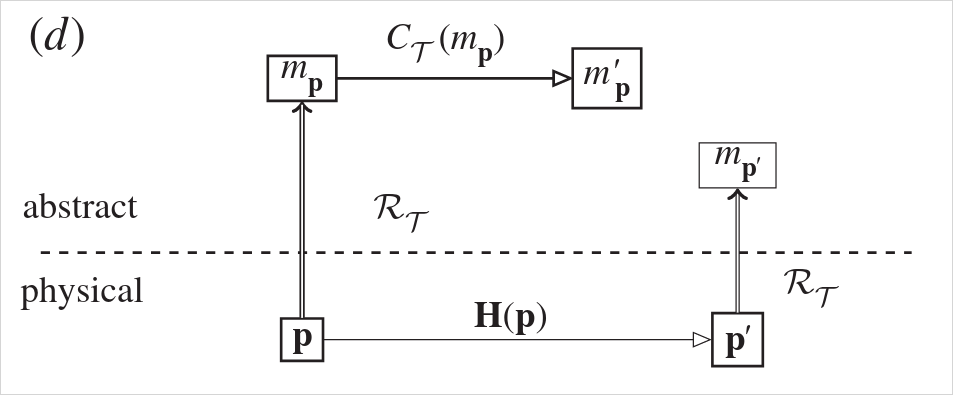
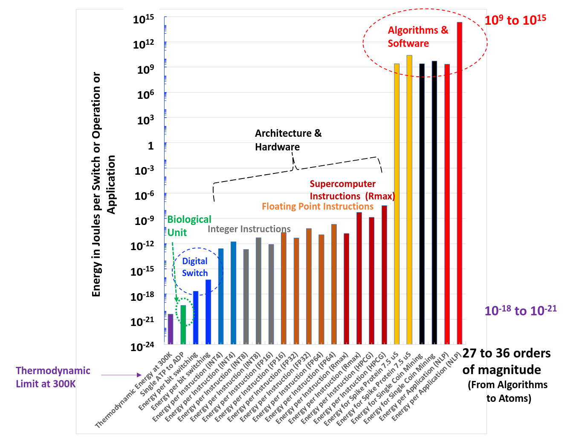
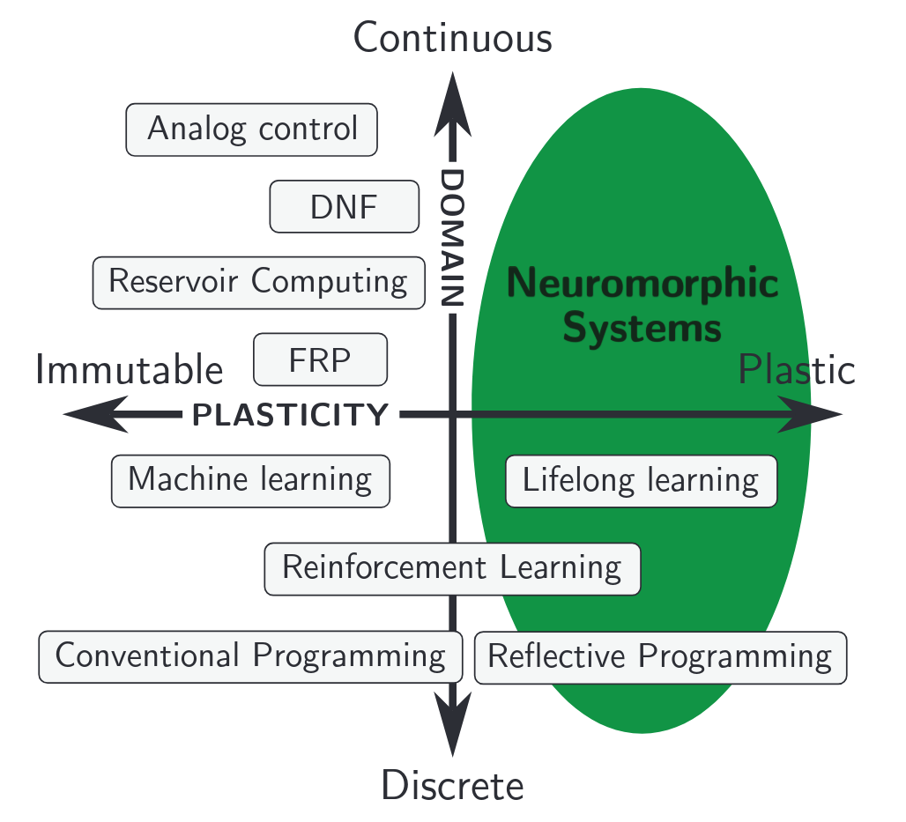

From digital to neural
Building with first principles
Jens Egholm Pedersen
KTH Royal Institute of Technology, Innatera
jeped@kth.se jegp@mastodon.social github.com/neuromorphs/nir
Who am I?
- Jens Egholm Pedersen
- MSc in computer science
- PhD student at KTH Royal Institute of Technology
- Co-author of Neuromorphic Intermediate representation
- Maintainer of several neuromorphic open-source efforts

 NIR
NIR
 NIRTorch
NIRTorch
 Norse
Norse
 Faery
FaeryAgenda
- What is digital and what is neural?
- What has been done?
- What is NIR?
- Where can we go now?
What is digital and what is neural?
- Defining computation
- What are digital computers doing?
- What are physical systems doing?
- What are neural systems doing?
Defining computation
A computation is any type of arithmetic or non-arithmetic calculation that is well-defined
Wikipedia
Every finitely realizable physical system can be perfectly simulated by a universal model computing machine by finite means
David Deutsch 1985
A computation is a set of operations that implement a mathematical function
Copeland 1996
"Set of operations" (system): $f': X' \to Y'$
Implementing computations
"When does a physical system compute?", Horsman et al. 2014
What are digital computers doing?
$$ f': \mathbb{B}^n \to \mathbb{B}^m $$First principles: Boolean algebra, Turing machines
What are physical systems doing?
First principles: Physics, calculus
Curve C illustrates the exponential dependence of the arrival rate of packets of the neurotransmitter at the postsynaptic membrane on the presynaptic membrane potential. Curve D shows the saturation current of a MOS transistor as a function of gate voltage.
Mead 1990
What are digital computers doing?
$$ f': \mathbb{B}^n \to \mathbb{B}^m $$ First principles: Boolean algebra, Turing machines
Shankar, 2023
What are neural systems doing?
... the nervous system is based on two types of communications: ... communications of orders (logical ones) and communications of numbers (arithmetical ones). The former may be described as language proper, the latter as mathematics.
"The Computer and the Brain", von Neumann 1958
What are neural systems doing?
Abreu & Pedersen, 2024
What has been done?
Focus: neuromorphics
What has been done practically?
Hardware platforms
BrainScaleS, Innatera T1, Loihi, SpiNNaker2, TrueNorth, ... (more on Open-Neuromorphic.org)
Software platforms
Brian, NEST, Norse, snnTorch, SpikingJelly, ... (more on Open-Neuromorphic.org)
Intermediaries
PyNN, NIR, NEURON
A few challenges...
- Ill-defined and unstable computational models (limited co-design)
- Heterogeneous and incompatible platforms
- Reproducibility crisis
What is the difference between a compiler and linker?
Compiler
Translates high-level code to machine code
Linker
Resolves references and produces executable
Morris, 1973; Patterson and Adhmed, 2019
What has been done theoretically?
- Extensive work on digital architectures and computations
- Little work on continuous-value or continuous-time computations
- Almost zero work on compilers and linkers outside digital systems
Why care about compiler correctness?
Morris, 1973; Patterson and Adhmed, 2019
"When does a physical system compute?", Horsman et al. 2014
The Neuromorphic Intermediate Representation

What does it mean to "build with first principles"?
- Provide complete mathematical definitions that works with the hardware (compiling and linking)
- Scale
Kudithipudi et al., 2025
The Neuromorphic Intermediate Representation
Reproducible computation
Neuron equations are based on idealized continuous-time models
Leaky-integrator: $\dot{v} = (v_{leak} - v) + R I$

... or not
Similarity for spiking CNN activity
- NIR reproduces ideal model
- Exposes discretization mismatch
- Allows platform-specific optimization

Norse $\rightarrow$ NIR
import norse.torch as norse
model = norse.SequentialState( ... )
nir_model = norse.to_nir(model, torch.randn(1, 10))
NIR $\rightarrow$ SynSense Sinabs
import sinabs.from_nir
sinabs_model = sinabs.from_nir(nir_model, batch_size=4)
NIR decouples hardware and algorithms
Where can we go now?
Kudithipudi et al., 2025
This essay introduces the term hardware lottery to describe when a research idea wins because it is suited to the available software and hardware and not because the idea is superior to alternative research directions.
Sara Hooker, 2020
Re-introduce analog accelerators
Shankar, 2023
Leverage analog-digital interplay
Abreu & Pedersen, 2024
Build the missing pieces - together
Open source efforts
- Continuous-valued representations
- Easy and open source software
- Common yard sticks and benchmarks
Visit Open-Neuromorphic.org
From digital to neural
Building with first principles
Jens Egholm Pedersen
KTH Royal Institute of Technology, Innatera
jeped@kth.se jegp@mastodon.social github.com/neuromorphs/nir